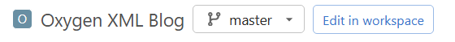
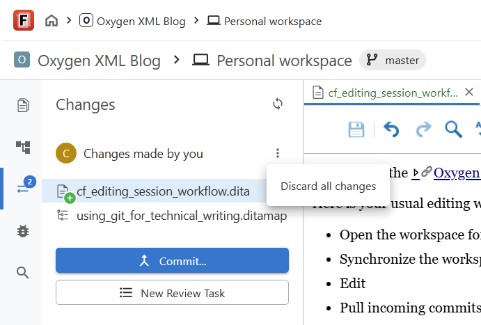
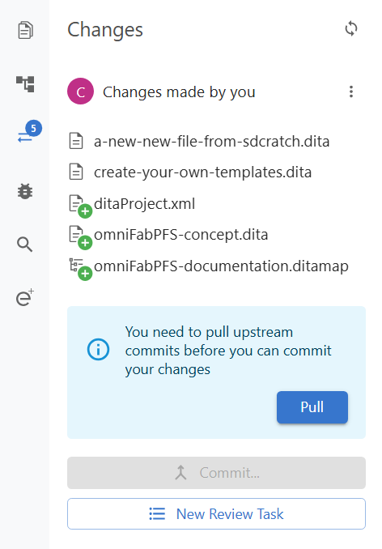
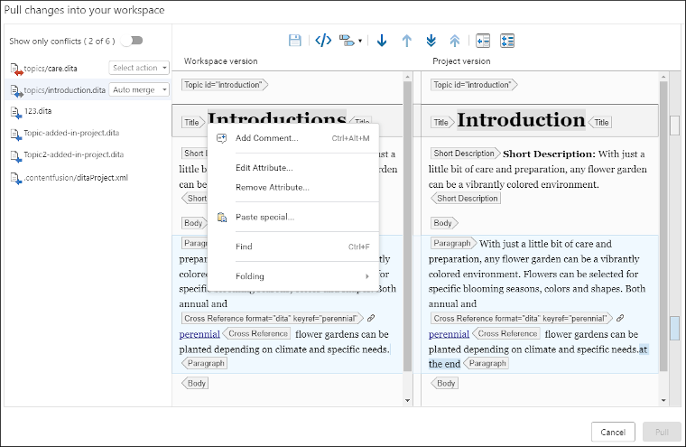
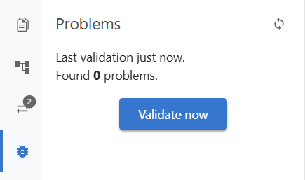

Editing Session with Oxygen Content Fusion
You can use the Oxygen Content Fusion authoring features to create content in your Git repository.
Here is your usual editing workflow to edit content on a Git branch:
- Open the workspace for that branch
- Synchronize the workspace
- Edit
- Pull incoming commits
- (Optional) Validate
- Commit
I will detail each step below.
Open the workspace
Content Fusion allows you to create a workspace for each Git branch. The workspace is lightweight meaning that it is created instantly and with minimal resource overhead. To open it, select the branch and click the Edit in workspace button.

Synchronize the workspace
In most cases, your workspace is updated automatically when you open it. However, if your workspace has some stale changes (maybe from an old abandoned edit), you will have to manually synchronize it. You have two tools:
- Use the Discard all changes action from the
Changes side view if the existing changes are not
relevant anymore:

- Pull the incoming commits. This lets you bring in
your workspace commits made by your collaborators.

Edit
Use the workspace tools to work on your content.
Pull incoming commits
While you were editing, your collaborators pushed some commits. Before you can commit your changes, you have to integrate theirs first. In rare cases, you might run into merge conflicts. To help you solve them, Content Fusion has a dedicated merge tool:

Validate
Use the Problems view to check if your changes introduce any validation problem or a broken link

Commit
To make your changes available in the Git repository, you have to Commit them. Make sure to provide a descriptive commit message.